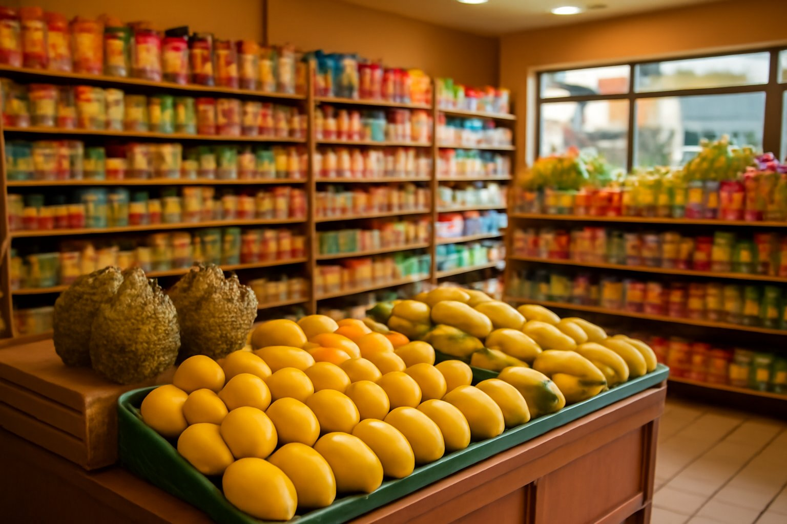
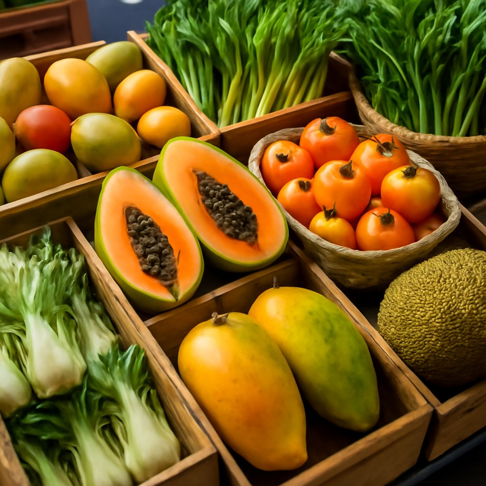
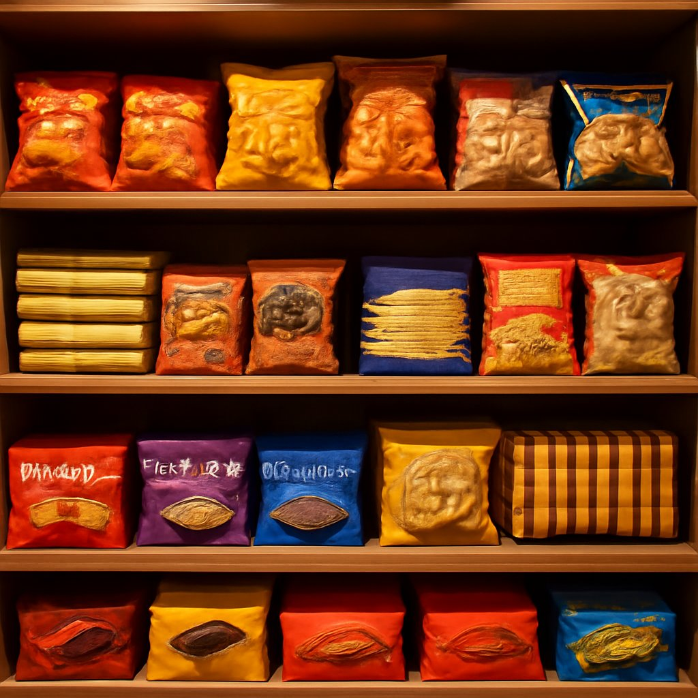
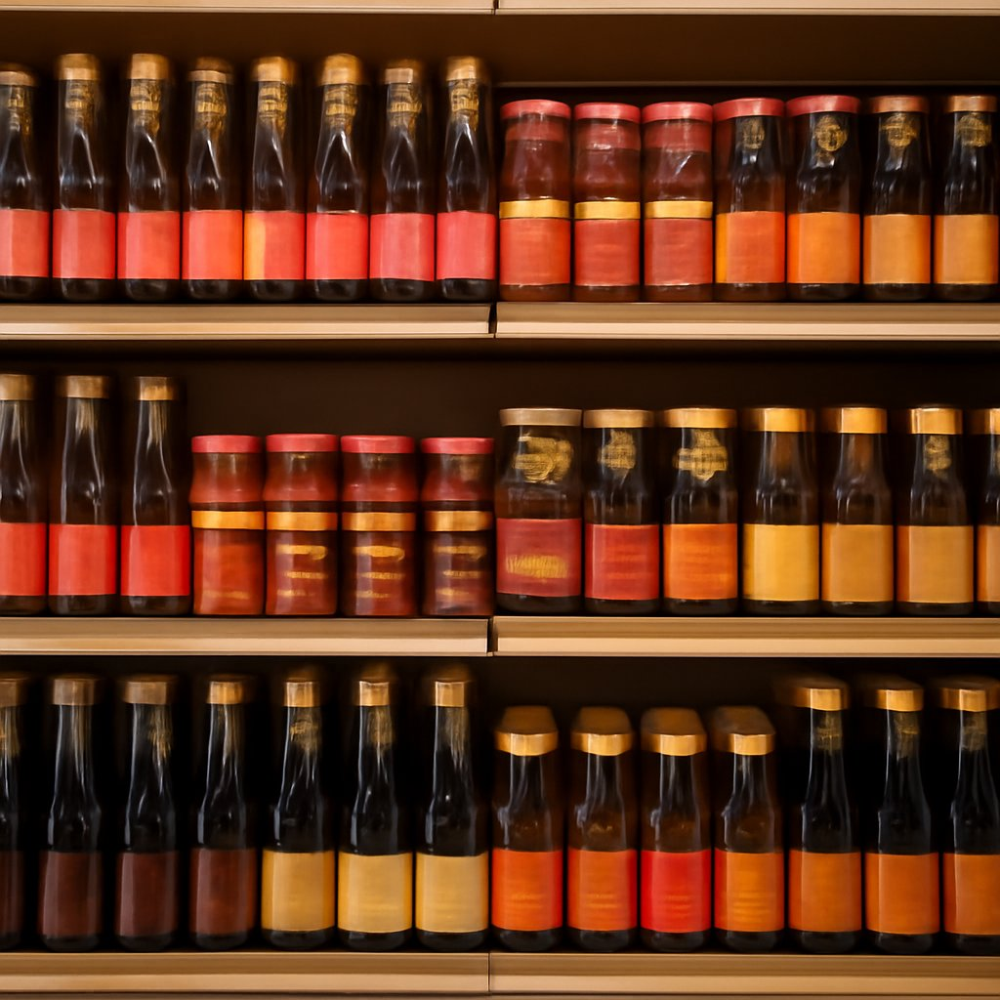
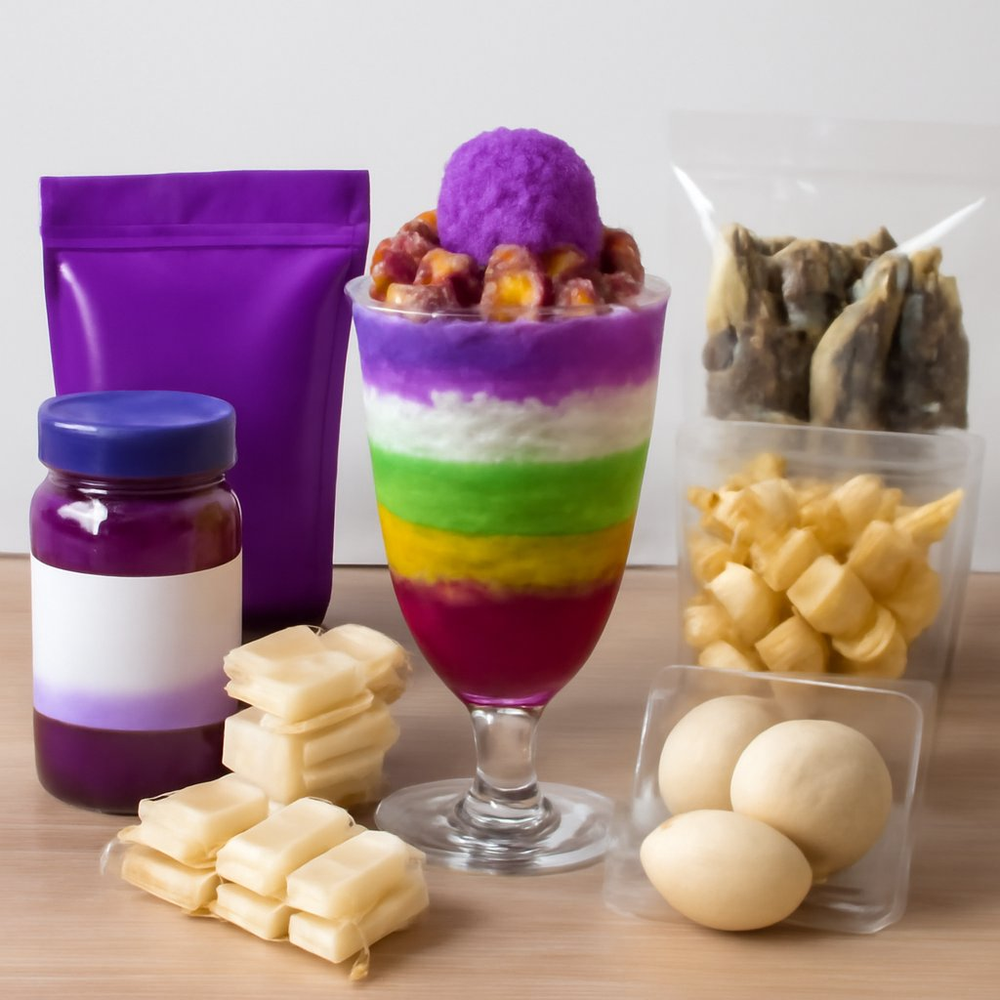
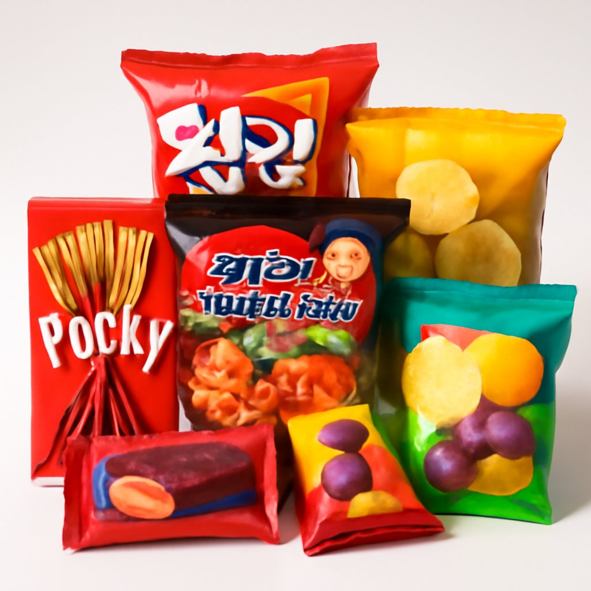
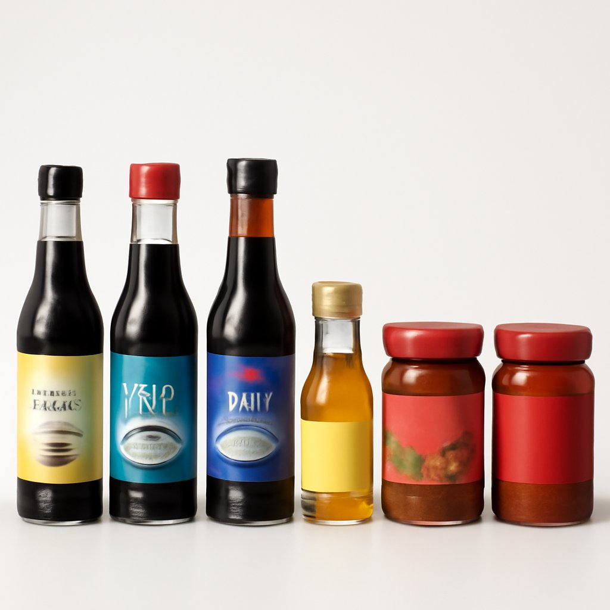
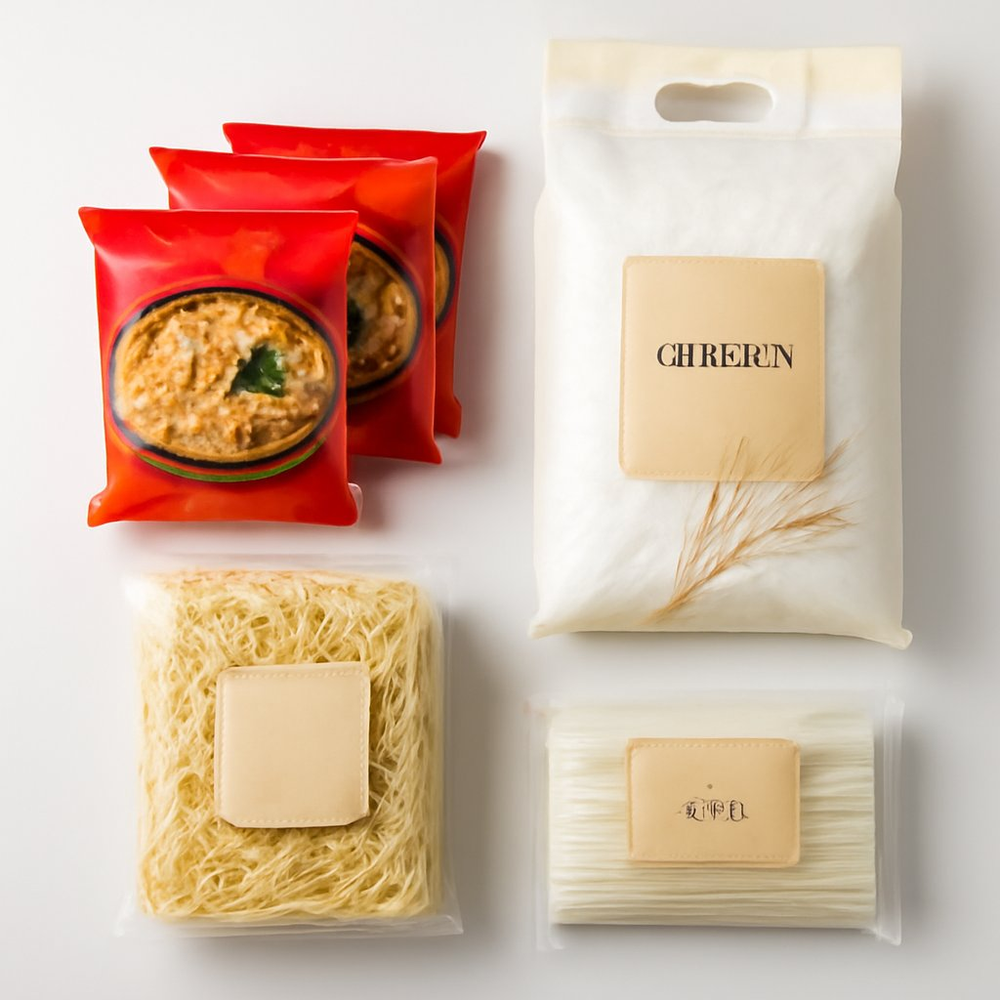
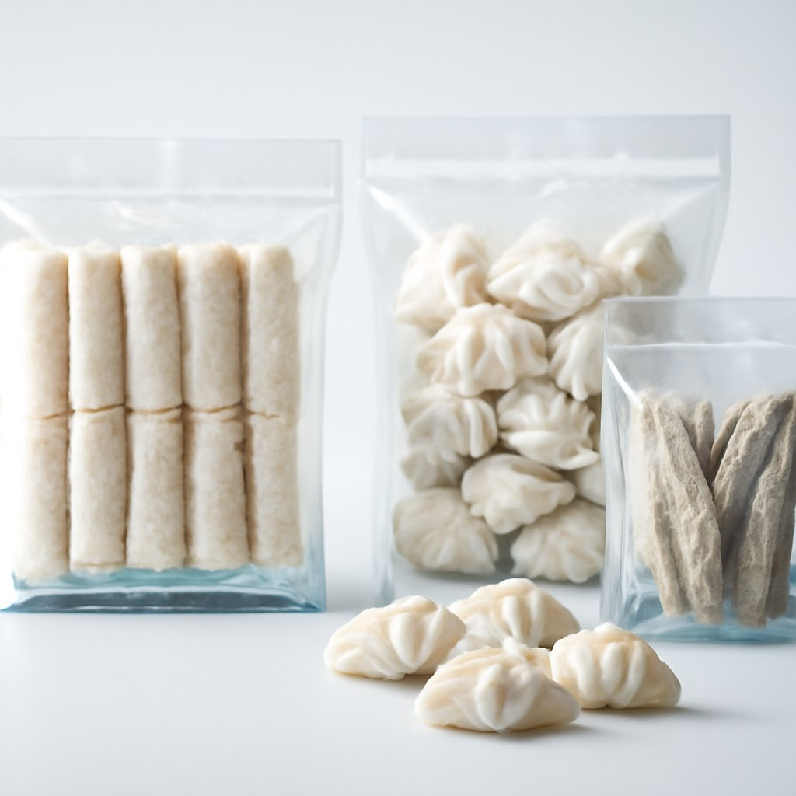
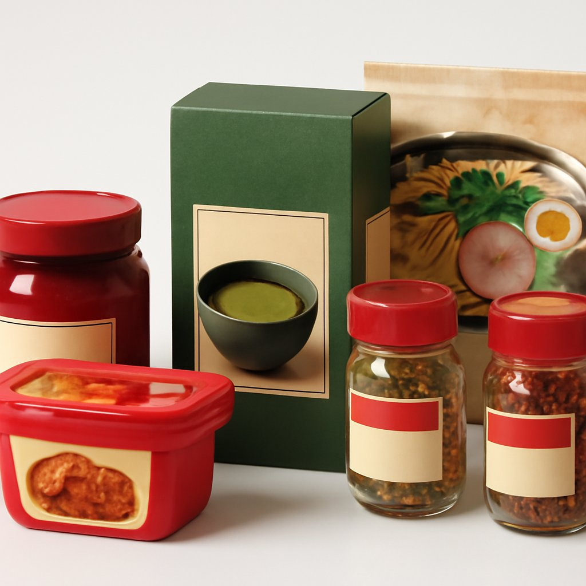

Fort Worth's go-to source for authentic Filipino and Southeast Asian groceries. Strong reviews. Hard-to-find products. Friendly faces.
Your reputation is earned. Now it's time the whole city can find you.



These are the things your real customers say — the kind of detail that turns a first visit into a regular habit.
Mangoes, persimmons, tropical vegetables — sourced in smaller batches so everything stays fresher, longer. Customers say it makes a real difference on the plate.
Halo-halo mix, ube products, balut, dried fish, Lobo seasoning packets — the real thing, not substitutes. The Filipino community in North Fort Worth comes here first.
Reviewers drive past larger, closer stores just for the staff. They know their regulars, answer questions, and genuinely care — something no chain can replicate.






"After dropping off family at DFW I was able to find Van Tran and was very happy with the selection."
"I love how they market as a Pinoy Pantry too, you can come get all your Filipino delights from here, from desserts to balut!"
"This is my go-to Asian market since we moved to the area a few years ago. The produce is always fresh and the variety of food types always suits my needs."
"I've been searching for an Asian market in the area and am so happy I found this place. Great selection for a small Asian grocery store. Clean and friendly employees."
"Woah! So much imported food. I will be back for ramen noodles. Place is clean and well organized, owners are friendly. Makes me want to visit the Philippines!"
"The fact that it is a family owned business makes it even better for me because I prefer to support local. They fit a lot into a small area. Van Tran aka Pinoy Pantry is our go-to place."
Whether you have a product question, want to know if we carry something specific, or are interested in learning more about our website proposal — we're happy to chat.